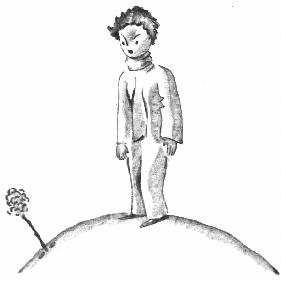
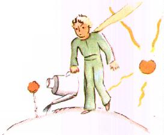

J'appris bien vite à mieux connaître cette fleur. Il y avait toujours eu, sur la planète du petit prince, des fleurs très simples, ornées d'un seul rang de pétales, et qui ne tenaient point de place, et qui ne dérangeaient personne. Elles apparaissaient un matin dans l'herbe, et puis elles s'éteignaient le soir. Mais celle-là avait germé un jour, d'une graine apportée d'on ne sait où, et le petit prince avait surveillé de très près cette brindille qui ne ressemblait pas aux autres brindilles. Ça pouvait être un nouveau genre de baobab. Mais l'arbuste cessa vite de croître, et commença de préparer une fleur. Le petit prince, qui assistait à l'installation d'un bouton énorme, sentait bien qu'il en sortirait une apparition miraculeuse, mais la fleur n'en finissait pas de se préparer à être belle, à l'abri de sa chambre verte. Elle choisissait avec soin ses couleurs. Elle s'habillait lentement, elle ajustait un à un ses pétales. Elle ne voulait pas sortir toute fripée comme les coquelicots. Elle ne voulait apparaître que dans le plein rayonnement de sa beauté. Eh! oui. Elle était très coquette ! Sa toilette mystérieuse avait donc duré des jours et des jours. Et puis voici qu'un matin, justement à l'heure du lever du soleil, elle s'était montrée. 
Et elle, qui avait travaillé avec tant de précision, dit en bâillant:
- Ah! Je me réveille à peine... Je vous demande pardon... Je suis encore toute décoiffée...
Le petit prince, alors, ne put contenir son admiration:
- Que vous êtes belle !
- N'est-ce pas, répondit doucement la fleur. Et je suis née en même temps que le soleil... 
Le petit prince devina bien qu'elle n'était pas trop modeste, mais elle était si émouvante !
- C'est l'heure, je crois, du petit déjeuner, avait-elle bientôt ajouté, auriez-vous la bonté de penser à moi...
Et le petit prince, tout confus, ayant été chercher un arrosoir d'eau fraîche, avait servi la fleur.
Ainsi l'avait-elle bien vite tourmenté par sa vanité un peu ombrageuse. Un jour, par exemple, parlant de ses quatre épines, elle avait dit au petit prince:
- Ils peuvent venir, les tigres, avec leurs griffes !
- Il n'y a pas de tigres sur ma planète, avait objecté le petit prince, et puis les tigres ne mangent pas l'herbe.
- Je ne suis pas une herbe, avait doucement répondu la fleur.
- Pardonnez-moi...
- Je ne crains rien des tigres, mais j'ai horreur des courants d'air. Vous n'auriez pas un paravent ?
"Horreur des courants d'air... ce n'est pas de chance, pour une plante, avait remarqué le petit prince. Cette fleur est bien compliquée..."
- Le soir vous me mettrez sous globe. Il fait très froid chez vous. C'est mal installé. Là d'où je viens...
Mais elle s'était interrompue. Elle était venue sous forme de graine. Elle n'avait rien pu connaître des autres mondes. Humiliée de s'être laissé surprendre à préparer un mensonge aussi naïf, elle avait toussé deux ou trois fois, pour mettre le petit prince dans son tort:
- Ce paravent ?...
- J'allais le chercher mais vous me parliez !
Alors elle avait forcé sa toux pour lui infliger quand même des remords.
Ainsi le petit prince, malgré la bonne volonté de son amour, avait vite douté d'elle. Il avait pris au sérieux des mots sans importance, et était devenu très malheureux.
"J'aurais dû ne pas l'écouter, me confia-t-il un jour, il ne faut jamais écouter les fleurs. Il faut les regarder et les respirer. La mienne embaumait ma planète, mais je ne savais pas m'en réjouir. Cette histoire de griffes, qui m'avait tellement agacé, eût dû m'attendrir..."
Il me confia encore:
"Je n'ai alors rien su comprendre ! J'aurais dû la juger sur
les actes et non sur les mots. Elle m'embaumait et m'éclairait.
Je n'aurais jamais dû m'enfuir ! J'aurais dû deviner sa tendresse
derrière ses pauvres ruses. Les fleurs sont si contradictoires !
Mais j'étais trop jeune pour savoir l'aimer."
| Chapitre VII | |
Capítulo VII |
| Index | Capítulo VIII | |
| Chapitre IX | Capítulo IX |